注意力机制 注意力机制概述 自主性的与非自主性的注意力提示解释了人类的注意力的方式， 下面来看看如何通过这两种注意力提示， 用神经网络来设计注意力机制的框架，
首先，考虑一个相对简单的状况， 即只使用非自主性提示。 要想将选择偏向于感官输入， 则可以简单地使用参数化的全连接层， 甚至是非参数化的最大汇聚层或平均汇聚层。
因此，“是否包含自主性提示”将注意力机制与全连接层或汇聚层区别开来。 在注意力机制的背景下，自主性提示被称为查询 （query）。 给定任何查询，注意力机制通过注意力汇聚 （attention pooling） 将选择引导至感官输入 （sensory inputs，例如中间特征表示）。 在注意力机制中，这些感官输入被称为值 （value）。 更通俗的解释，每个值都与一个键 （key）配对， 这可以想象为感官输入的非自主提示。 如下图所示，可以通过设计注意力汇聚的方式， 便于给定的查询（自主性提示）与键（非自主性提示）进行匹配， 这将引导得出最匹配的值（感官输入）。
此外，注意力机制的设计有许多替代方案。 例如可以设计一个不可微的注意力模型， 该模型可以使用强化学习方法 (Mnih et al. , 2014 )进行训练
注意力汇聚 考虑下面这个回归问题：
给定的成对的“输入－输出”数据集 { ( x 1 , y 1 ) , … , ( x n , y n ) } \{(x_1, y_1), \ldots, (x_n, y_n)\} {( x 1 , y 1 ) , … , ( x n , y n )} f f f x x x y ^ = f ( x ) \hat{y} = f(x) y ^ = f ( x )
根据下面的非线性函数生成一个人工数据集，其中加入的噪声项为 ϵ \epsilon ϵ
y i = 2 sin ( x i ) + x i 0.8 + ϵ , y_i = 2\sin(x_i) + x_i^{0.8} + \epsilon, y i = 2 sin ( x i ) + x i 0.8 + ϵ ,
其中 ϵ \epsilon ϵ 0 0 0 0.5 0.5 0.5 50 50 50 50 50 50
平均汇聚 先使用最简单的估计器来解决回归问题。基于平均汇聚来计算所有训练样本输出值的平均值：
f ( x ) = 1 n ∑ i = 1 n y i , f(x) = \frac{1}{n}\sum_{i=1}^n y_i, f ( x ) = n 1 i = 1 ∑ n y i ,
如下图所示，这个估计器确实不够聪明。（粉色为预测值，蓝色为真实值）
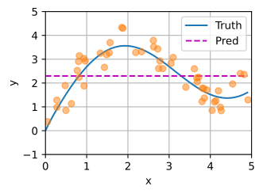
非参数注意力汇聚 显然，平均汇聚忽略了输入 x i x_i x i y i y_i y i
f ( x ) = ∑ i = 1 n K ( x − x i ) ∑ j = 1 n K ( x − x j ) y i , f(x) = \sum_{i=1}^n \frac{K(x - x_i)}{\sum_{j=1}^n K(x - x_j)} y_i, f ( x ) = i = 1 ∑ n ∑ j = 1 n K ( x − x j ) K ( x − x i ) y i ,
其中 K K K 核 （kernel）。公式所描述的估计器被称为Nadaraya-Watson核回归 （Nadaraya-Watson kernel regression）。
这里不会深入讨论核函数的细节，但受此启发，我们可以从注意力机制框架的角度，重写该式成为一个更加通用的注意力汇聚 （attention pooling）公式：
f ( x ) = ∑ i = 1 n α ( x , x i ) y i , f(x) = \sum_{i=1}^n \alpha(x, x_i) y_i, f ( x ) = i = 1 ∑ n α ( x , x i ) y i ,
其中 x x x ( x i , y i ) (x_i, y_i) ( x i , y i ) y i y_i y i x x x x i x_i x i 注意力权重 （attention weight） α ( x , x i ) \alpha(x, x_i) α ( x , x i ) y i y_i y i
为了更好地理解注意力汇聚，下面考虑一个高斯核 （Gaussian kernel），其定义为：
K ( u ) = 1 2 π exp ( − u 2 2 ) . K(u) = \frac{1}{\sqrt{2\pi}} \exp(-\frac{u^2}{2}). K ( u ) = 2 π 1 exp ( − 2 u 2 ) .
将高斯核代入上面两个公式，可以得到：
f ( x ) = ∑ i = 1 n α ( x , x i ) y i = ∑ i = 1 n exp ( − 1 2 ( x − x i ) 2 ) ∑ j = 1 n exp ( − 1 2 ( x − x j ) 2 ) y i = ∑ i = 1 n s o f t m a x ( − 1 2 ( x − x i ) 2 ) y i . \begin{aligned} f(x) &=\sum_{i=1}^n \alpha(x, x_i) y_i\\ &= \sum_{i=1}^n \frac{\exp\left(-\frac{1}{2}(x - x_i)^2\right)}{\sum_{j=1}^n \exp\left(-\frac{1}{2}(x - x_j)^2\right)} y_i \\&= \sum_{i=1}^n \mathrm{softmax}\left(-\frac{1}{2}(x - x_i)^2\right) y_i. \end{aligned} f ( x ) = i = 1 ∑ n α ( x , x i ) y i = i = 1 ∑ n ∑ j = 1 n exp ( − 2 1 ( x − x j ) 2 ) exp ( − 2 1 ( x − x i ) 2 ) y i = i = 1 ∑ n softmax ( − 2 1 ( x − x i ) 2 ) y i .
在上式中，如果一个键 x i x_i x i x x x y i y_i y i
值得注意的是，Nadaraya-Watson核回归是一个非参数模型。
因此，上式是非参数的注意力汇聚 （nonparametric attention pooling）模型。
带参数注意力汇聚 在下面的查询 x x x x i x_i x i w w w
f ( x ) = ∑ i = 1 n α ( x , x i ) y i = ∑ i = 1 n exp ( − 1 2 ( ( x − x i ) w ) 2 ) ∑ j = 1 n exp ( − 1 2 ( ( x − x j ) w ) 2 ) y i = ∑ i = 1 n s o f t m a x ( − 1 2 ( ( x − x i ) w ) 2 ) y i . \begin{aligned}f(x) &= \sum_{i=1}^n \alpha(x, x_i) y_i \\&= \sum_{i=1}^n \frac{\exp\left(-\frac{1}{2}((x - x_i)w)^2\right)}{\sum_{j=1}^n \exp\left(-\frac{1}{2}((x - x_j)w)^2\right)} y_i \\&= \sum_{i=1}^n \mathrm{softmax}\left(-\frac{1}{2}((x - x_i)w)^2\right) y_i.\end{aligned} f ( x ) = i = 1 ∑ n α ( x , x i ) y i = i = 1 ∑ n ∑ j = 1 n exp ( − 2 1 (( x − x j ) w ) 2 ) exp ( − 2 1 (( x − x i ) w ) 2 ) y i = i = 1 ∑ n softmax ( − 2 1 (( x − x i ) w ) 2 ) y i .
即：
1 2 3 4 5 6 7 8 9 10 11 12 13 class NWKernelRegression (nn.Module): def __init__ (self, **kwargs ): super ().__init__(**kwargs) self.w = nn.Parameter(torch.rand((1 ,), requires_grad=True )) def forward (self, queries, keys, values ): queries = queries.repeat_interleave(keys.shape[1 ]).reshape((-1 , keys.shape[1 ])) self.attention_weights = nn.functional.softmax( -((queries - keys) * self.w)**2 / 2 , dim=1 ) return torch.bmm(self.attention_weights.unsqueeze(1 ), values.unsqueeze(-1 )).reshape(-1 )
训练 接下来，将训练数据集变换为键和值 用于训练注意力模型。在带参数的注意力汇聚模型中，任何一个训练样本的输入都会和除自己以外的所有训练样本的“键－值”对进行计算，从而得到其对应的预测输出。
1 2 3 4 5 6 7 8 9 10 11 12 13 14 15 16 17 18 19 20 21 22 23 24 25 26 27 28 29 30 31 32 33 34 35 36 37 38 39 40 41 42 43 44 45 46 47 48 49 50 51 52 53 54 55 56 57 58 59 60 61 62 63 64 65 66 67 68 69 70 71 72 73 74 75 76 import torchfrom torch import nnimport matplotlib.pyplot as pltdef plot_kernel_reg (x_test, y_truth, y_hat, x_train, y_train ): plt.plot(x_test, y_truth, label='Truth' ) plt.plot(x_test, y_hat, label='Pred' ) plt.xlabel('x' ) plt.ylabel('y' ) plt.legend() plt.xlim(0 , 5 ) plt.ylim(-1 , 5 ) plt.plot(x_train, y_train, 'o' , alpha=0.5 ) plt.show() def f (x ): return 2 * torch.sin(x) + x ** 0.8 class NWKernelRegression (nn.Module): def __init__ (self, **kwargs ): super ().__init__(**kwargs) self.w = nn.Parameter(torch.rand((1 ,), requires_grad=True )) def forward (self, queries, keys, values ): queries = queries.repeat_interleave(keys.shape[1 ]).reshape((-1 , keys.shape[1 ])) self.attention_weights = nn.functional.softmax( -((queries - keys) * self.w) ** 2 / 2 , dim=1 ) return torch.bmm(self.attention_weights.unsqueeze(1 ), values.unsqueeze(-1 )).reshape(-1 ) n_train = 50 x_train, _ = torch.sort(torch.rand(n_train) * 5 ) y_train = f(x_train) + torch.normal(0.0 , 0.5 , (n_train,)) x_test = torch.arange(0 , 5 , 0.1 ) y_truth = f(x_test) n_test = len (x_test) X = torch.ones((2 , 1 , 4 )) Y = torch.ones((2 , 4 , 6 )) weights = torch.ones((2 , 10 )) * 0.1 X_tile = x_train.repeat((n_train, 1 )) Y_tile = y_train.repeat((n_train, 1 )) keys = X_tile[(1 - torch.eye(n_train)).type (torch.bool )].reshape((n_train, -1 )) values = Y_tile[(1 - torch.eye(n_train)).type (torch.bool )].reshape((n_train, -1 )) net = NWKernelRegression() loss = nn.MSELoss(reduction='none' ) trainer = torch.optim.SGD(net.parameters(), lr=0.5 ) for epoch in range (5 ): trainer.zero_grad() l = loss(net(x_train, keys, values), y_train) l.sum ().backward() trainer.step() print (f'epoch {epoch + 1 } , loss {float (l.sum ()):.6 f} ' ) keys = x_train.repeat((n_test, 1 )) values = y_train.repeat((n_test, 1 )) y_hat = net(x_test, keys, values).unsqueeze(1 ).detach() plot_kernel_reg(x_test, y_truth, y_hat, x_train, y_train)
注意力评分函数 上一节中高斯核指数部分可以视为注意力评分函数（attention scoring function）， 然后把这个函数的输出结果输入到softmax函数中进行运算。 通过上述步骤，将得到与键对应的值的概率分布（即注意力权重）。 最后，注意力汇聚的输出就是基于这些注意力权重的值的加权和。
下图说明了如何将注意力汇聚的输出计算成为值的加权和，其中 a a a
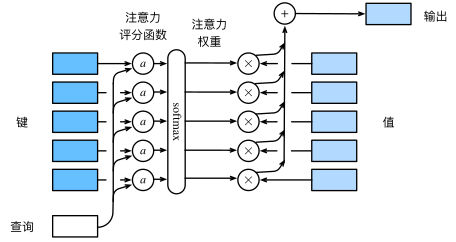
用数学语言描述，假设有一个查询 q ∈ R q \mathbf{q} \in \mathbb{R}^q q ∈ R q m m m ( k 1 , v 1 ) , … , ( k m , v m ) (\mathbf{k}_1, \mathbf{v}_1), \ldots, (\mathbf{k}_m, \mathbf{v}_m) ( k 1 , v 1 ) , … , ( k m , v m ) k i ∈ R k \mathbf{k}_i \in \mathbb{R}^k k i ∈ R k v i ∈ R v \mathbf{v}_i \in \mathbb{R}^v v i ∈ R v f f f
f ( q , ( k 1 , v 1 ) , … , ( k m , v m ) ) = ∑ i = 1 m α ( q , k i ) v i ∈ R v , f(\mathbf{q}, (\mathbf{k}_1, \mathbf{v}_1), \ldots, (\mathbf{k}_m, \mathbf{v}_m)) = \sum_{i=1}^m \alpha(\mathbf{q}, \mathbf{k}_i) \mathbf{v}_i \in \mathbb{R}^v, f ( q , ( k 1 , v 1 ) , … , ( k m , v m )) = i = 1 ∑ m α ( q , k i ) v i ∈ R v ,
其中查询 q \mathbf{q} q k i \mathbf{k}_i k i a a a
α ( q , k i ) = s o f t m a x ( a ( q , k i ) ) = exp ( a ( q , k i ) ) ∑ j = 1 m exp ( a ( q , k j ) ) ∈ R . \alpha(\mathbf{q}, \mathbf{k}_i) = \mathrm{softmax}(a(\mathbf{q}, \mathbf{k}_i)) = \frac{\exp(a(\mathbf{q}, \mathbf{k}_i))}{\sum_{j=1}^m \exp(a(\mathbf{q}, \mathbf{k}_j))} \in \mathbb{R}. α ( q , k i ) = softmax ( a ( q , k i )) = ∑ j = 1 m exp ( a ( q , k j )) exp ( a ( q , k i )) ∈ R .
正如上图所示，选择不同的注意力评分函数 a a a
掩蔽softmax操作 正如上面提到的，softmax操作用于输出一个概率分布作为注意力权重。 在某些情况下，并非所有的值都应该被纳入到注意力汇聚中。 例如，为了高效处理小批量数据集， 某些文本序列被填充了没有意义的特殊词元。 为了仅将有意义的词元作为值来获取注意力汇聚， 可以指定一个有效序列长度（即词元的个数）， 以便在计算softmax时过滤掉超出指定范围的位置 。 下面的masked_softmax函数 实现了这样的掩蔽softmax操作（masked softmax operation）， 其中任何超出有效长度的位置都被掩蔽并置为0。
1 2 3 4 5 6 7 8 9 10 11 12 13 14 15 def masked_softmax (X, valid_lens ): """通过在最后一个轴上掩蔽元素来执行softmax操作""" if valid_lens is None : return nn.functional.softmax(X, dim=-1 ) else : shape = X.shape if valid_lens.dim() == 1 : valid_lens = torch.repeat_interleave(valid_lens, shape[1 ]) else : valid_lens = valid_lens.reshape(-1 ) X = d2l.sequence_mask(X.reshape(-1 , shape[-1 ]), valid_lens, value=-1e6 ) return nn.functional.softmax(X.reshape(shape), dim=-1 )
加性注意力 一般来说，当查询和键是不同长度的矢量时，可以使用加性注意力作为评分函数。
给定查询 q ∈ R q \mathbf{q} \in \mathbb{R}^q q ∈ R q k ∈ R k \mathbf{k} \in \mathbb{R}^k k ∈ R k 加性注意力 （additive attention）的评分函数为
a ( q , k ) = w v ⊤ tanh ( W q q + W k k ) ∈ R , a(\mathbf q, \mathbf k) = \mathbf w_v^\top \text{tanh}(\mathbf W_q\mathbf q + \mathbf W_k \mathbf k) \in \mathbb{R}, a ( q , k ) = w v ⊤ tanh ( W q q + W k k ) ∈ R ,
其中可学习的参数是 W q ∈ R h × q \mathbf W_q\in\mathbb R^{h\times q} W q ∈ R h × q W k ∈ R h × k \mathbf W_k\in\mathbb R^{h\times k} W k ∈ R h × k w v ∈ R h \mathbf w_v\in\mathbb R^{h} w v ∈ R h
如上式所示，将查询和键连结起来后输入到一个多层感知机（MLP）中，感知机包含一个隐藏层，其隐藏单元数是一个超参数 h h h tanh \tanh tanh
1 2 3 4 5 6 7 8 9 10 11 12 13 14 15 16 17 18 19 20 21 22 23 class AdditiveAttention (nn.Module): """加性注意力""" def __init__ (self, key_size, query_size, num_hiddens, dropout, **kwargs ): super (AdditiveAttention, self).__init__(**kwargs) self.W_k = nn.Linear(key_size, num_hiddens, bias=False ) self.W_q = nn.Linear(query_size, num_hiddens, bias=False ) self.w_v = nn.Linear(num_hiddens, 1 , bias=False ) self.dropout = nn.Dropout(dropout) def forward (self, queries, keys, values, valid_lens ): queries, keys = self.W_q(queries), self.W_k(keys) features = queries.unsqueeze(2 ) + keys.unsqueeze(1 ) features = torch.tanh(features) scores = self.w_v(features).squeeze(-1 ) self.attention_weights = masked_softmax(scores, valid_lens) return torch.bmm(self.dropout(self.attention_weights), values)
缩放点积注意力 使用点积可以得到计算效率更高的评分函数，但是点积操作要求查询和键具有相同的长度 d d d 0 0 0 d d d 1 1 1 d \sqrt{d} d 缩放点积注意力 （scaled dot-product attention）评分函数为：
a ( q , k ) = q ⊤ k / d . a(\mathbf q, \mathbf k) = \mathbf{q}^\top \mathbf{k} /\sqrt{d}. a ( q , k ) = q ⊤ k / d .
在实践中，我们通常从小批量的角度来考虑提高效率，例如基于 n n n m m m d d d v v v Q ∈ R n × d \mathbf Q\in\mathbb R^{n\times d} Q ∈ R n × d K ∈ R m × d \mathbf K\in\mathbb R^{m\times d} K ∈ R m × d V ∈ R m × v \mathbf V\in\mathbb R^{m\times v} V ∈ R m × v
s o f t m a x ( Q K ⊤ d ) V ∈ R n × v . \mathrm{softmax}\left(\frac{\mathbf Q \mathbf K^\top }{\sqrt{d}}\right) \mathbf V \in \mathbb{R}^{n\times v}. softmax ( d Q K ⊤ ) V ∈ R n × v .
下面的缩放点积注意力的实现使用了暂退法进行模型正则化。
1 2 3 4 5 6 7 8 9 10 11 12 13 14 15 16 class DotProductAttention (nn.Module): """缩放点积注意力""" def __init__ (self, dropout, **kwargs ): super (DotProductAttention, self).__init__(**kwargs) self.dropout = nn.Dropout(dropout) def forward (self, queries, keys, values, valid_lens=None ): d = queries.shape[-1 ] scores = torch.bmm(queries, keys.transpose(1 ,2 )) / math.sqrt(d) self.attention_weights = masked_softmax(scores, valid_lens) return torch.bmm(self.dropout(self.attention_weights), values)
Bahdanau 注意力 对于机器翻译问题： 通过设计一个基于两个循环神经网络的编码器-解码器架构， 用于序列到序列学习。 具体来说，循环神经网络编码器将长度可变的序列转换为固定形状的上下文变量， 然后循环神经网络解码器根据生成的词元和上下文变量 按词元生成输出（目标）序列词元。 然而，即使并非所有输入（源）词元都对解码某个词元都有用， 在每个解码步骤中仍使用编码相同的上下文变量。 有什么方法能改变上下文变量呢？
受学习对齐想法的启发，Bahdanau等人提出了一个没有严格单向对齐限制的可微注意力模型 (Bahdanau et al. , 2014 )。 在预测词元时，如果不是所有输入词元都相关，模型将仅对齐（或参与）输入序列中与当前预测相关的部分。这是通过将上下文变量视为注意力集中的输出来实现的。
假设输入序列中有 T T T t ′ t' t ′
c t ′ = ∑ t = 1 T α ( s t ′ − 1 , h t ) h t , \mathbf{c}_{t'} = \sum_{t=1}^T \alpha(\mathbf{s}_{t' - 1}, \mathbf{h}_t) \mathbf{h}_t, c t ′ = t = 1 ∑ T α ( s t ′ − 1 , h t ) h t ,
其中，时间步 t ′ − 1 t' - 1 t ′ − 1 s t ′ − 1 \mathbf{s}_{t' - 1} s t ′ − 1 h t \mathbf{h}_t h t α \alpha α 加性注意力打分函数 计算的。
如下图，一个带有Bahdanau注意力的循环神经网络编码器-解码器模型
在预测词元时，如果不是所有输入词元都是相关的，那么具有Bahdanau注意力的循环神经网络编码器-解码器会有选择地统计输入序列的不同部分。这是通过将上下文变量视为加性注意力池化的输出来实现的。 在循环神经网络编码器-解码器中，Bahdanau注意力将上一时间步的解码器隐状态视为查询，在所有时间步的编码器隐状态同时视为键和值。 多头注意力 在实践中，当给定相同的查询、键和值的集合时， 我们希望模型可以基于相同的注意力机制学习到不同的行为， 然后将不同的行为作为知识组合起来， 捕获序列内各种范围的依赖关系 （例如，短距离依赖和长距离依赖关系）。 因此，允许注意力机制组合使用查询、键和值的不同 子空间表示（representation subspaces）可能是有益的。
为此，与其只使用单独一个注意力汇聚， 我们可以用独立学习得到的 h h h 线性投影 （linear projections）来变换查询、键和值。 然后，这 h h h h h h Vaswani et al. , 2017 )。 对于 h h h
给定查询 q ∈ R d q \mathbf{q} \in \mathbb{R}^{d_q} q ∈ R d q k ∈ R d k \mathbf{k} \in \mathbb{R}^{d_k} k ∈ R d k v ∈ R d v \mathbf{v} \in \mathbb{R}^{d_v} v ∈ R d v h i \mathbf{h}_i h i i = 1 , … , h i = 1, \ldots, h i = 1 , … , h
h i = f ( W i ( q ) q , W i ( k ) k , W i ( v ) v ) ∈ R p v , \mathbf{h}_i = f(\mathbf W_i^{(q)}\mathbf q, \mathbf W_i^{(k)}\mathbf k,\mathbf W_i^{(v)}\mathbf v) \in \mathbb R^{p_v}, h i = f ( W i ( q ) q , W i ( k ) k , W i ( v ) v ) ∈ R p v ,
其中，可学习的参数包括 W i ( q ) ∈ R p q × d q \mathbf W_i^{(q)}\in\mathbb R^{p_q\times d_q} W i ( q ) ∈ R p q × d q W i ( k ) ∈ R p k × d k \mathbf W_i^{(k)}\in\mathbb R^{p_k\times d_k} W i ( k ) ∈ R p k × d k W i ( v ) ∈ R p v × d v \mathbf W_i^{(v)}\in\mathbb R^{p_v\times d_v} W i ( v ) ∈ R p v × d v f f f f f f h h h
W o ∈ R p o × h p v \mathbf W_o\in\mathbb R^{p_o\times h p_v} W o ∈ R p o × h p v
W o [ h 1 ⋮ h h ] ∈ R p o . \mathbf W_o \begin{bmatrix}\mathbf h_1\\\vdots\\\mathbf h_h\end{bmatrix} \in \mathbb{R}^{p_o}. W o ⎣ ⎡ h 1 ⋮ h h ⎦ ⎤ ∈ R p o .
基于这种设计，每个头都可能会关注输入的不同部分，可以表示比简单加权平均值更复杂的函数。
1 2 3 4 5 6 7 8 9 10 11 12 13 14 15 16 17 18 19 20 21 22 23 24 25 26 27 28 29 30 31 32 33 34 35 36 37 38 39 40 41 42 43 44 45 46 47 48 49 50 51 52 53 54 55 56 57 58 59 60 61 62 63 64 65 66 67 68 69 70 71 72 73 74 75 76 77 78 79 80 81 82 83 84 85 86 87 88 89 90 91 92 93 94 95 96 97 98 99 100 101 102 103 104 105 106 107 108 109 110 111 112 113 114 115 116 117 118 119 120 121 122 import mathimport torchfrom torch import nndef sequence_mask (X, valid_lens, value=-1e6 ): max_len = X.size(1 ) mask = torch.arange(max_len)[None , :].to(X.device) < valid_lens[:, None ] X[~mask] = value return X def masked_softmax (X, valid_lens ): """通过在最后一个轴上掩蔽元素来执行softmax操作""" if valid_lens is None : return nn.functional.softmax(X, dim=-1 ) else : shape = X.shape if valid_lens.dim() == 1 : valid_lens = torch.repeat_interleave(valid_lens, shape[1 ]) else : valid_lens = valid_lens.reshape(-1 ) X = sequence_mask(X.reshape(-1 , shape[-1 ]), valid_lens, value=-1e6 ) return nn.functional.softmax(X.reshape(shape), dim=-1 ) class DotProductAttention (nn.Module): """缩放点积注意力""" def __init__ (self, dropout, **kwargs ): super (DotProductAttention, self).__init__(**kwargs) self.dropout = nn.Dropout(dropout) def forward (self, queries, keys, values, valid_lens=None ): d = queries.shape[-1 ] scores = torch.bmm(queries, keys.transpose(1 , 2 )) / math.sqrt(d) self.attention_weights = masked_softmax(scores, valid_lens) return torch.bmm(self.dropout(self.attention_weights), values) def transpose_qkv (X, num_heads ): """为了多注意力头的并行计算而变换形状""" X = X.reshape(X.shape[0 ], X.shape[1 ], num_heads, -1 ) X = X.permute(0 , 2 , 1 , 3 ) return X.reshape(-1 , X.shape[2 ], X.shape[3 ]) def transpose_output (X, num_heads ): """逆转transpose_qkv函数的操作""" X = X.reshape(-1 , num_heads, X.shape[1 ], X.shape[2 ]) X = X.permute(0 , 2 , 1 , 3 ) return X.reshape(X.shape[0 ], X.shape[1 ], -1 ) class MultiHeadAttention (nn.Module): """多头注意力""" def __init__ (self, key_size, query_size, value_size, num_hiddens, num_heads, dropout, bias=False , **kwargs ): super (MultiHeadAttention, self).__init__(**kwargs) self.num_heads = num_heads self.attention = DotProductAttention(dropout) self.W_q = nn.Linear(query_size, num_hiddens, bias=bias) self.W_k = nn.Linear(key_size, num_hiddens, bias=bias) self.W_v = nn.Linear(value_size, num_hiddens, bias=bias) self.W_o = nn.Linear(num_hiddens, num_hiddens, bias=bias) def forward (self, queries, keys, values, valid_lens ): queries = transpose_qkv(self.W_q(queries), self.num_heads) keys = transpose_qkv(self.W_k(keys), self.num_heads) values = transpose_qkv(self.W_v(values), self.num_heads) if valid_lens is not None : valid_lens = torch.repeat_interleave( valid_lens, repeats=self.num_heads, dim=0 ) output = self.attention(queries, keys, values, valid_lens) output_concat = transpose_output(output, self.num_heads) return self.W_o(output_concat) num_hiddens, num_heads = 100 , 5 attention = MultiHeadAttention(num_hiddens, num_hiddens, num_hiddens, num_hiddens, num_heads, 0.5 ) print (attention.eval ())batch_size, num_queries = 2 , 4 num_kvpairs, valid_lens = 6 , torch.tensor([3 , 2 ]) X = torch.ones((batch_size, num_queries, num_hiddens)) Y = torch.ones((batch_size, num_kvpairs, num_hiddens)) print (attention(X, Y, Y, valid_lens).shape)
自注意力 有了注意力机制之后，我们将词元序列输入注意力池化中， 以便同一组词元同时充当查询、键和值。 具体来说，每个查询都会关注所有的键－值对并生成一个注意力输出。 由于查询、键和值来自同一组输入，因此被称为 自注意力（self-attention） (Lin et al. , 2017 , Vaswani et al. , 2017 )， 也被称为内部注意力（intra-attention） (Cheng et al. , 2016 , Parikh et al. , 2016 , Paulus et al. , 2017 )。 本节将使用自注意力进行序列编码，以及使用序列的顺序作为补充信息。
给定一个由词元组成的输入序列 x 1 , … , x n \mathbf{x}_1, \ldots, \mathbf{x}_n x 1 , … , x n x i ∈ R d \mathbf{x}_i \in \mathbb{R}^d x i ∈ R d 1 ≤ i ≤ n 1 \leq i \leq n 1 ≤ i ≤ n y 1 , … , y n \mathbf{y}_1, \ldots, \mathbf{y}_n y 1 , … , y n
y i = f ( x i , ( x 1 , x 1 ) , … , ( x n , x n ) ) ∈ R d \mathbf{y}_i = f(\mathbf{x}_i, (\mathbf{x}_1, \mathbf{x}_1), \ldots, (\mathbf{x}_n, \mathbf{x}_n)) \in \mathbb{R}^d y i = f ( x i , ( x 1 , x 1 ) , … , ( x n , x n )) ∈ R d
自注意力模型采用查询-键-值 (Query-Key-Value,QKV)模式。
(1) 计算查询矩阵Q,键矩阵K,值矩阵V 假设输入序列为 X = [ x 1 , . . . , x N ] ∈ R D x × N X=[x_1,...,x_N] \in \Bbb{R}^{D_x×N} X = [ x 1 , ... , x N ] ∈ R D x × N 词嵌入 得到 A = [ a 1 , . . . , a N ] ∈ R D a × N A=[a_1,...,a_N] \in \Bbb{R}^{D_a×N} A = [ a 1 , ... , a N ] ∈ R D a × N
查询矩阵 Q = [ q 1 , . . . , q N ] ∈ R D k × N Q=[q_1,...,q_N] \in \Bbb{R}^{D_k×N} Q = [ q 1 , ... , q N ] ∈ R D k × N 键矩阵 K = [ k 1 , . . . , k N ] ∈ R D k × N K=[k_1,...,k_N] \in \Bbb{R}^{D_k×N} K = [ k 1 , ... , k N ] ∈ R D k × N 值矩阵 V = [ v 1 , . . . , v N ] ∈ R D v × N V=[v_1,...,v_N] \in \Bbb{R}^{D_v×N} V = [ v 1 , ... , v N ] ∈ R D v × N 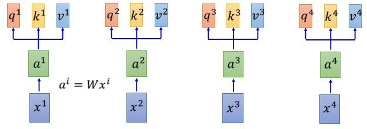
矩阵运算如下：
Q = W q A , W q ∈ R D k × D a Q = W^qA, \quad W^q \in \Bbb{R}^{D_k×D_a} Q = W q A , W q ∈ R D k × D a
K = W k A , W k ∈ R D k × D a K = W^kA, \quad W^k \in \Bbb{R}^{D_k×D_a} K = W k A , W k ∈ R D k × D a
V = W v A , W v ∈ R D v × D a V = W^vA, \quad W^v \in \Bbb{R}^{D_v×D_a} V = W v A , W v ∈ R D v × D a
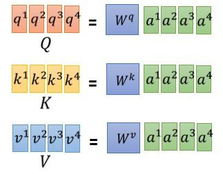
(2) 计算注意力分布 对于每个查询向量 q i q_i q i 键值对注意力机制 ,得到注意力分布 a ^ 1 , 1 , . . . , a ^ 1 , N \hat{a}_{1,1},...,\hat{a}_{1,N} a ^ 1 , 1 , ... , a ^ 1 , N
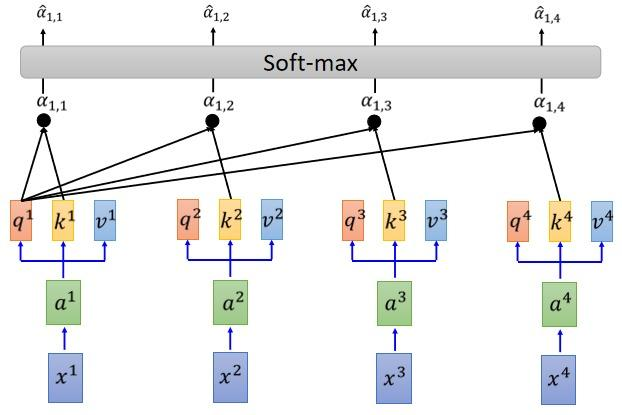
矩阵运算如下：
A = K T Q D k A = \frac{K^TQ}{\sqrt{D_k}} A = D k K T Q
A ^ = s o f t m a x ( A ) \hat{A} = softmax(A) A ^ = so f t ma x ( A )
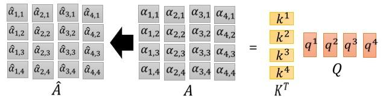
其中注意力得分选用缩放点积Scaled Dot-Product ，其原因是后续的Softmax 函数对较大或较小的输入非常敏感(容易映射到 1 1 1 0 0 0 D k \sqrt{D_k} D k Softmax 函数按列 运算。
(3) 加权求和 根据注意力分布 A ^ \hat{A} A ^ 加权求和 得到输出：
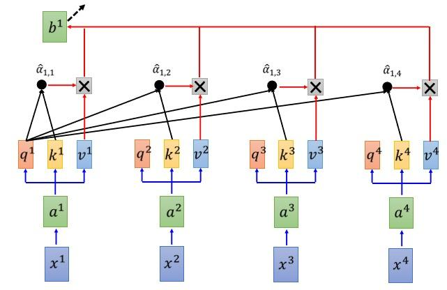
矩阵运算如下：
B = V A ^ B = V\hat{A} B = V A ^
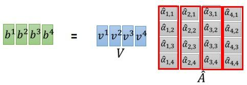
自注意力模型的优点 ：
提高并行计算效率; 捕捉长距离的依赖关系。 自注意力模型可以看作在一个线性投影空间中建立 X X X O ( N 2 ) O(N^2) O ( N 2 ) restricted 自注意力机制，即假设当前词只与前后 r r r O ( r N ) O(rN) O ( r N )
下面的代码片段是基于多头注意力对一个张量完成自注意力的计算，张量的形状为（批量大小，时间步的数目或词元序列的长度，d）。输出与输入的张量形状相同。
1 2 3 4 5 6 7 8 9 10 11 12 13 14 15 16 17 18 19 20 21 22 23 24 25 26 27 28 29 30 31 32 33 34 35 36 37 38 39 40 41 42 43 44 45 46 47 48 49 50 51 52 53 54 55 56 57 58 59 60 61 62 63 64 65 66 67 68 69 70 71 72 73 74 75 76 77 78 79 80 81 82 83 84 85 86 87 88 89 90 91 92 93 94 95 96 97 98 99 100 101 102 103 104 105 106 107 108 109 110 111 112 113 114 115 116 117 118 119 120 import mathimport torchfrom torch import nndef sequence_mask (X, valid_lens, value=-1e6 ): max_len = X.size(1 ) mask = torch.arange(max_len)[None , :].to(X.device) < valid_lens[:, None ] X[~mask] = value return X def masked_softmax (X, valid_lens ): """通过在最后一个轴上掩蔽元素来执行softmax操作""" if valid_lens is None : return nn.functional.softmax(X, dim=-1 ) else : shape = X.shape if valid_lens.dim() == 1 : valid_lens = torch.repeat_interleave(valid_lens, shape[1 ]) else : valid_lens = valid_lens.reshape(-1 ) X = sequence_mask(X.reshape(-1 , shape[-1 ]), valid_lens, value=-1e6 ) return nn.functional.softmax(X.reshape(shape), dim=-1 ) class DotProductAttention (nn.Module): """缩放点积注意力""" def __init__ (self, dropout, **kwargs ): super (DotProductAttention, self).__init__(**kwargs) self.dropout = nn.Dropout(dropout) def forward (self, queries, keys, values, valid_lens=None ): d = queries.shape[-1 ] scores = torch.bmm(queries, keys.transpose(1 , 2 )) / math.sqrt(d) self.attention_weights = masked_softmax(scores, valid_lens) return torch.bmm(self.dropout(self.attention_weights), values) def transpose_qkv (X, num_heads ): """为了多注意力头的并行计算而变换形状""" X = X.reshape(X.shape[0 ], X.shape[1 ], num_heads, -1 ) X = X.permute(0 , 2 , 1 , 3 ) return X.reshape(-1 , X.shape[2 ], X.shape[3 ]) def transpose_output (X, num_heads ): """逆转transpose_qkv函数的操作""" X = X.reshape(-1 , num_heads, X.shape[1 ], X.shape[2 ]) X = X.permute(0 , 2 , 1 , 3 ) return X.reshape(X.shape[0 ], X.shape[1 ], -1 ) class MultiHeadAttention (nn.Module): """多头注意力""" def __init__ (self, key_size, query_size, value_size, num_hiddens, num_heads, dropout, bias=False , **kwargs ): super (MultiHeadAttention, self).__init__(**kwargs) self.num_heads = num_heads self.attention = DotProductAttention(dropout) self.W_q = nn.Linear(query_size, num_hiddens, bias=bias) self.W_k = nn.Linear(key_size, num_hiddens, bias=bias) self.W_v = nn.Linear(value_size, num_hiddens, bias=bias) self.W_o = nn.Linear(num_hiddens, num_hiddens, bias=bias) def forward (self, queries, keys, values, valid_lens ): queries = transpose_qkv(self.W_q(queries), self.num_heads) keys = transpose_qkv(self.W_k(keys), self.num_heads) values = transpose_qkv(self.W_v(values), self.num_heads) if valid_lens is not None : valid_lens = torch.repeat_interleave( valid_lens, repeats=self.num_heads, dim=0 ) output = self.attention(queries, keys, values, valid_lens) output_concat = transpose_output(output, self.num_heads) return self.W_o(output_concat) num_hiddens, num_heads = 100 , 5 attention = MultiHeadAttention(num_hiddens, num_hiddens, num_hiddens, num_hiddens, num_heads, 0.5 ) print (attention.eval ())batch_size, num_queries, valid_lens = 2 , 4 , torch.tensor([3 , 2 ]) X = torch.ones((batch_size, num_queries, num_hiddens)) print (attention(X, X, X, valid_lens).shape)
比较卷积神经网络、循环神经网络和自注意力
考虑一个卷积核大小为 k k k n n n d d d O ( k n d 2 ) \mathcal{O}(knd^2) O ( kn d 2 )
如上图所示，卷积神经网络是分层的，因此为有 O ( 1 ) \mathcal{O}(1) O ( 1 ) O ( n / k ) \mathcal{O}(n/k) O ( n / k ) x 1 \mathbf{x}_1 x 1 x 5 \mathbf{x}_5 x 5
当更新循环神经网络的隐状态时， d × d d \times d d × d d d d O ( d 2 ) \mathcal{O}(d^2) O ( d 2 ) n n n O ( n d 2 ) \mathcal{O}(nd^2) O ( n d 2 ) O ( n ) \mathcal{O}(n) O ( n ) O ( n ) \mathcal{O}(n) O ( n )
在自注意力中，查询、键和值都是 n × d n \times d n × d n × d n \times d n × d d × n d \times n d × n n × n n \times n n × n n × d n \times d n × d O ( n 2 d ) \mathcal{O}(n^2d) O ( n 2 d )
正如上图，每个词元都通过自注意力直接连接到任何其他词元。因此，有 O ( 1 ) \mathcal{O}(1) O ( 1 ) O ( 1 ) \mathcal{O}(1) O ( 1 )
位置编码 Transformer 中的自注意力机制无法捕捉位置信息，这是因为其计算过程具有置换不变性 (permutation invariant )，导致打乱输入序列的顺序对输出结果不会产生任何影响。
对于Transformer 模型 f ( ⋅ ) f(\cdot) f ( ⋅ ) x m , x n x_m,x_n x m , x n Transformer 具有全对称性 ：
f ( ⋯ , x m , ⋯ , x n , ⋯ ) = f ( ⋯ , x n , ⋯ , x m , ⋯ ) f(\cdots, x_m, \cdots, x_n, \cdots) = f(\cdots, x_n, \cdots, x_m, \cdots) f ( ⋯ , x m , ⋯ , x n , ⋯ ) = f ( ⋯ , x n , ⋯ , x m , ⋯ )
**位置编码(Position Encoding)**通过把位置信息引入输入序列中，以打破模型的全对称性。为简化问题，考虑在 m , n m,n m , n p m , p n p_m,p_n p m , p n
f ~ ( ⋯ , x m , ⋯ , x n , ⋯ ) = f ( ⋯ , x m + p m , ⋯ , x n + p n , ⋯ ) \tilde{f}(\cdots, x_m, \cdots, x_n, \cdots) = f(\cdots, x_m+p_m, \cdots, x_n+p_n, \cdots) f ~ ( ⋯ , x m , ⋯ , x n , ⋯ ) = f ( ⋯ , x m + p m , ⋯ , x n + p n , ⋯ )
对上式进行二阶Taylor 展开：
f ~ ≈ f + p m T ∂ f ∂ x m + p n T ∂ f ∂ x n + p m T ∂ 2 f ∂ x m 2 p m + p n T ∂ 2 f ∂ x n p n ⏟ 绝对位置信息 + p m T ∂ 2 f ∂ x m ∂ x n p n ⏟ 相对位置信息 \tilde{f} ≈ f + \underbrace{p_m^T \frac{\partial f}{\partial x_m} + p_n^T \frac{\partial f}{\partial x_n} + p_m^T \frac{\partial^2 f}{\partial x_m^2}p_m + p_n^T \frac{\partial^2 f}{\partial x_n}p_n}_{\text{绝对位置信息}} +\underbrace{p_m^T \frac{\partial^2 f}{\partial x_m\partial x_n}p_n}_{\text{相对位置信息}} f ~ ≈ f + 绝对位置信息 p m T ∂ x m ∂ f + p n T ∂ x n ∂ f + p m T ∂ x m 2 ∂ 2 f p m + p n T ∂ x n ∂ 2 f p n + 相对位置信息 p m T ∂ x m ∂ x n ∂ 2 f p n
在上式中，第2 至5 项只依赖于单一位置，表示绝对位置信息。第6 项包含 m , n m,n m , n
绝对位置编码 (absolute PE) ：将位置信息加入到输入序列中，相当于引入索引的嵌入。比如Sinusoidal , Learnable , FLOATER , Complex-order , RoPE 相对位置编码 (relative PE) ：通过微调自注意力运算过程使其能分辨不同token 之间的相对位置。比如XLNet , T5 , DeBERTa , URPE 绝对位置编码 Absolute Position Encoding 绝对位置编码 是指在输入序列经过词嵌入后的第 k k k token 向量 x k ∈ R d x_k \in \Bbb{R}^{d} x k ∈ R d add )位置向量 p k ∈ R d p_k \in \Bbb{R}^{d} p k ∈ R d concatenate )位置索引 k k k one hot 向量 p k : x k + p k p_k: x_k+p_k p k : x k + p k 位置嵌入(position embedding) 。
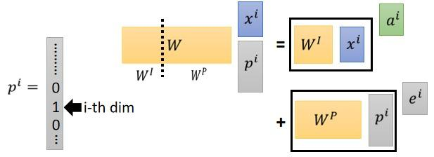
三角函数式(Sinusoidal)位置编码 三角函数式(Sinusoidal )位置编码是在原Transformer 模型中使用的一种显式编码。以一维三角函数编码为例：
假设输入表示 X ∈ R n × d \mathbf{X} \in \mathbb{R}^{n \times d} X ∈ R n × d n n n d d d P ∈ R n × d \mathbf{P} \in \mathbb{R}^{n \times d} P ∈ R n × d X + P \mathbf{X} + \mathbf{P} X + P i i i 2 j 2j 2 j 2 j + 1 2j+1 2 j + 1
p k , 2 i = sin ( k 1000 0 2 i / d ) p k , 2 i + 1 = cos ( k 1000 0 2 i / d ) \begin{aligned} p_{k,2i} &= \sin(\frac{k}{10000^{2i/d}}) \\ p_{k,2i+1} &= \cos(\frac{k}{10000^{2i/d}}) \end{aligned} p k , 2 i p k , 2 i + 1 = sin ( 1000 0 2 i / d k ) = cos ( 1000 0 2 i / d k )
其中 p k , 2 i , p k , 2 i + 1 p_{k,2i},p_{k,2i+1} p k , 2 i , p k , 2 i + 1 k k k 2 i , 2 i + 1 2i,2i+1 2 i , 2 i + 1 32 32 32 128 128 128 Sinusoidal 编码的可视化如下：
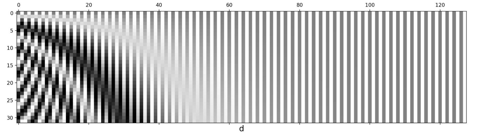
1 2 3 4 5 6 7 8 9 10 11 12 13 14 15 16 17 18 19 20 21 22 23 24 25 26 27 28 29 30 31 32 33 34 35 36 import torchfrom torch import nnimport matplotlib.pyplot as pltclass PositionalEncoding (nn.Module): """位置编码""" def __init__ (self, num_hiddens, dropout, max_len=1000 ): super (PositionalEncoding, self).__init__() self.dropout = nn.Dropout(dropout) self.P = torch.zeros((1 , max_len, num_hiddens)) X = torch.arange(max_len, dtype=torch.float32).reshape( -1 , 1 ) / torch.pow (10000 , torch.arange( 0 , num_hiddens, 2 , dtype=torch.float32) / num_hiddens) self.P[:, :, 0 ::2 ] = torch.sin(X) self.P[:, :, 1 ::2 ] = torch.cos(X) def forward (self, X ): X = X + self.P[:, :X.shape[1 ], :].to(X.device) return self.dropout(X) encoding_dim, num_steps = 32 , 60 pos_encoding = PositionalEncoding(encoding_dim, 0 ) pos_encoding.eval () X = pos_encoding(torch.zeros((1 , num_steps, encoding_dim))) P = pos_encoding.P[:, :X.shape[1 ], :] plt.figure(figsize=(6 , 2.5 )) colors = ['b' , 'g' , 'r' , 'c' ] line_styles = ['-' , '--' , '-.' , ':' ] for i, (color, line_style) in enumerate (zip (colors, line_styles)): plt.plot(P[0 , :, i+6 ].permute(1 , 0 ), label="Col %d" % (i+6 ), color=color, linestyle=line_style) plt.xlabel('Row (position)' ) plt.legend() plt.show()
根据三角函数的性质，位置 α + β \alpha+\beta α + β α \alpha α β \beta β 外推 到任意位置：
sin ( α + β ) = sin α cos β + cos α sin β cos ( α + β ) = cos α cos β − sin α sin β \begin{aligned} \sin(\alpha+\beta) &= \sin \alpha \cos \beta + \cos \alpha \sin \beta \\ \cos(\alpha+\beta) &= \cos \alpha \cos \beta - \sin \alpha \sin \beta \end{aligned} sin ( α + β ) cos ( α + β ) = sin α cos β + cos α sin β = cos α cos β − sin α sin β
在图像领域，常用到二维形式的位置编码。以二维三角函数编码为例，需要分别对高度方向和宽度方向进行编码 p = [ p h , p w ] p=[p_h,p_w] p = [ p h , p w ]
p h , 2 i = sin ( h 1000 0 2 i / d ) , p h , 2 i + 1 = cos ( h 1000 0 2 i / d ) p w , 2 i = sin ( w 1000 0 2 i / d ) , p w , 2 i + 1 = cos ( w 1000 0 2 i / d ) \begin{aligned} p_{h,2i} &= \sin(\frac{h}{10000^{2i/d}}), \quad p_{h,2i+1} = \cos(\frac{h}{10000^{2i/d}}) \\ p_{w,2i} &= \sin(\frac{w}{10000^{2i/d}}), \quad p_{w,2i+1} = \cos(\frac{w}{10000^{2i/d}}) \end{aligned} p h , 2 i p w , 2 i = sin ( 1000 0 2 i / d h ) , p h , 2 i + 1 = cos ( 1000 0 2 i / d h ) = sin ( 1000 0 2 i / d w ) , p w , 2 i + 1 = cos ( 1000 0 2 i / d w )
1 2 3 4 5 6 7 8 9 10 11 12 13 14 15 16 17 18 19 20 21 22 def positionalencoding2d (d_model, height, width ): """ :param d_model: dimension of the model :param height: height of the positions :param width: width of the positions :return: d_model*height*width position matrix """ if d_model % 4 != 0 : raise ValueError("Cannot use sin/cos positional encoding with " "odd dimension (got dim={:d})" .format (d_model)) pe = torch.zeros(d_model, height, width) d_model = int (d_model / 2 ) div_term = torch.exp(torch.arange(0. , d_model, 2 ) * -(math.log(10000.0 ) / d_model)) pos_w = torch.arange(0. , width).unsqueeze(1 ) pos_h = torch.arange(0. , height).unsqueeze(1 ) pe[0 :d_model:2 , :, :] = torch.sin(pos_w * div_term).transpose(0 , 1 ).unsqueeze(1 ).repeat(1 , height, 1 ) pe[1 :d_model:2 , :, :] = torch.cos(pos_w * div_term).transpose(0 , 1 ).unsqueeze(1 ).repeat(1 , height, 1 ) pe[d_model::2 , :, :] = torch.sin(pos_h * div_term).transpose(0 , 1 ).unsqueeze(2 ).repeat(1 , 1 , width) pe[d_model+1 ::2 , :, :] = torch.cos(pos_h * div_term).transpose(0 , 1 ).unsqueeze(2 ).repeat(1 , 1 , width) return pe
可学习(Learnable)位置编码 可学习(Learnable )位置编码是指将位置编码当作可训练参数，比如输入序列(经过嵌入层后)的大小为 n × d n \times d n × d p ∈ R n × d p \in \Bbb{R}^{n \times d} p ∈ R n × d
可学习位置编码的缺点是没有外推性 ，即如果预训练序列的最大长度为 n n n n n n n n n
FLOATER：递归式位置编码 Learning to Encode Position for Transformer with Continuous Dynamical Model
如果位置编码能够递归地生成 p k + 1 = f ( p k ) p_{k+1}=f(p_k) p k + 1 = f ( p k )
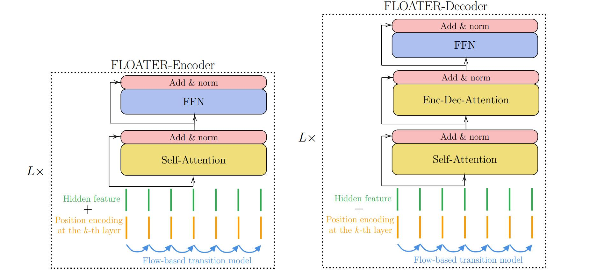
Position Encoding with Dynamical Systems 位置编码可以表示为一个离散序列 { p i ∈ R d : i = 1 , . . . , T } \{p_i \in \Bbb{R}^d : i=1,...,T\} { p i ∈ R d : i = 1 , ... , T } p ( t ) p(t) p ( t ) Neural ODE )构建一个连续动力系统：
d p ( t ) d t = h ( t , p ( t ) ; θ h ) \frac{d p(t)}{dt} = h(t,p(t);\theta_h) d t d p ( t ) = h ( t , p ( t ) ; θ h )
或表示为积分形式：
p ( t ) = p ( s ) + ∫ s t h ( τ , p ( τ ) ; θ h ) d τ p(t) = p(s) + \int_{s}^{t} h(\tau,p(\tau);\theta_h) d\tau p ( t ) = p ( s ) + ∫ s t h ( τ , p ( τ ) ; θ h ) d τ
其中 h ( τ , p ( τ ) ; θ h ) h(\tau,p(\tau);\theta_h) h ( τ , p ( τ ) ; θ h ) θ h \theta_h θ h t i = i ⋅ Δ t t_i=i\cdot \Delta t t i = i ⋅ Δ t
p N = p N − 1 + ∫ ( N − 1 ) Δ t N Δ t h ( τ , p ( τ ) ; θ h ) d τ p_N = p_{N-1} + \int_{(N-1)\Delta t}^{N \Delta t} h(\tau,p(\tau);\theta_h) d\tau p N = p N − 1 + ∫ ( N − 1 ) Δ t N Δ t h ( τ , p ( τ ) ; θ h ) d τ
在训练时采用adjoint 方法计算 θ h \theta_h θ h
d L d θ h = − ∫ t s a ( τ ) T ∂ h ( τ , p ( τ ) ; θ h ) ∂ θ h d τ \frac{dL}{d \theta_h} = - \int_{t}^{s} a(\tau)^T \frac{\partial h(\tau,p(\tau);\theta_h)}{\partial \theta_h} d\tau d θ h d L = − ∫ t s a ( τ ) T ∂ θ h ∂ h ( τ , p ( τ ) ; θ h ) d τ
adjoint 状态 a ( τ ) a(\tau) a ( τ ) adjoint 方程得到：
d a ( τ ) d τ = − a ( τ ) T ∂ h ( τ , p ( τ ) ; θ h ) ∂ p ( τ ) \frac{da(\tau)}{d \tau} = - a(\tau)^T \frac{\partial h(\tau,p(\tau);\theta_h)}{\partial p(\tau)} d τ d a ( τ ) = − a ( τ ) T ∂ p ( τ ) ∂ h ( τ , p ( τ ) ; θ h )
上述方程可以使用Runge-Kutta 法或中点法来求解。
Parameter Sharing and Warm-start Training 普通的可学习编码可以在Transformer 的每一层都注入位置信息，但是每增加一层的位置信息，用于位置编码的参数量就会翻倍。作者设计的连续动力系统能够在每一层共享参数( θ h ( 1 ) = θ h ( 2 ) = ⋯ θ h ( N ) \theta_h^{(1)}=\theta_h^{(2)}=\cdots \theta_h^{(N)} θ h ( 1 ) = θ h ( 2 ) = ⋯ θ h ( N )
p ( n ) ( t ) = p ( n ) ( s ) + ∫ s t h ( n ) ( τ , p ( n ) ( τ ) ; θ h ( n ) ) d τ p^{(n)}(t) = p^{(n)}(s) + \int_{s}^{t} h^{(n)}(\tau,p^{(n)}(\tau);\theta_h^{(n)}) d\tau p ( n ) ( t ) = p ( n ) ( s ) + ∫ s t h ( n ) ( τ , p ( n ) ( τ ) ; θ h ( n ) ) d τ
注意到三角函数编码是FLOATER 的一个特例：
p i + 1 [ j ] − p i [ j ] = { sin ( ( i + 1 ) ⋅ c j d ) − sin ( i ⋅ c j d ) , if j is even cos ( ( i + 1 ) ⋅ c j − 1 d ) − cos ( i ⋅ c j − 1 d ) , if j is odd = { ∫ i i + 1 c − j d cos ( τ ⋅ c j d ) d τ , if j is even ∫ i i + 1 − c − j − 1 d sin ( τ ⋅ c j − 1 d ) d τ , if j is odd \begin{aligned} p_{i+1}[j]-p_i[j] &= \begin{cases} \sin((i+1)\cdot c^{\frac{j}{d}})-\sin(i\cdot c^{\frac{j}{d}}), & \text{if } j \text{ is even} \\ \cos((i+1)\cdot c^{\frac{j-1}{d}})-\cos(i\cdot c^{\frac{j-1}{d}}), & \text{if } j \text{ is odd} \end{cases}\\& = \begin{cases} \int_{i}^{i+1}c^{-\frac{j}{d}} \cos(\tau \cdot c^{\frac{j}{d}}) d\tau , & \text{if } j \text{ is even} \\ \int_{i}^{i+1}-c^{-\frac{j-1}{d}} \sin(\tau \cdot c^{\frac{j-1}{d}}) d\tau , & \text{if } j \text{ is odd} \end{cases} \end{aligned} p i + 1 [ j ] − p i [ j ] = { sin (( i + 1 ) ⋅ c d j ) − sin ( i ⋅ c d j ) , cos (( i + 1 ) ⋅ c d j − 1 ) − cos ( i ⋅ c d j − 1 ) , if j is even if j is odd = { ∫ i i + 1 c − d j cos ( τ ⋅ c d j ) d τ , ∫ i i + 1 − c − d j − 1 sin ( τ ⋅ c d j − 1 ) d τ , if j is even if j is odd
因此可以使用三角函数编码作为FLOATER 的参数初始化，然后在下游任务上微调模型。由于微分方程求解器无法利用GPU并行计算能力，常微分方程带来的额外时间开销是不容忽视的。使用三角函数编码来初始化FLOATER 能够避免从头训练模型，减小时间开销。
RoPE：旋转式位置编码 RoFormer: Enhanced Transformer with Rotary Position Embedding
旋转式位置编码是指在构造查询矩阵 q q q k k k R \mathcal{R} R
q i = R i x i W Q , k j = R j x j W K q_i = \mathcal{R}_ix_i W^Q , k_j = \mathcal{R}_jx_j W^K q i = R i x i W Q , k j = R j x j W K
旋转矩阵 R \mathcal{R} R R i T R j = R j − i \mathcal{R}_i^T\mathcal{R}_j=\mathcal{R}_{j-i} R i T R j = R j − i
( R i x i W Q ) T ( R j x j W K ) = ( x i W Q ) T R i T R j x j W K = ( x i W Q ) T R j − i x j W K (\mathcal{R}_ix_i W^Q)^T(\mathcal{R}_jx_j W^K) = (x_i W^Q)^T\mathcal{R}_i^T\mathcal{R}_jx_j W^K = (x_i W^Q)^T\mathcal{R}_{j-i}x_j W^K ( R i x i W Q ) T ( R j x j W K ) = ( x i W Q ) T R i T R j x j W K = ( x i W Q ) T R j − i x j W K
相对位置编码 Relative Position Encoding 相对位置编码并不是直接建模每个输入token 的位置信息，而是在计算注意力矩阵时考虑当前向量与待交互向量的位置的相对距离。
从绝对位置编码出发，其形式相当于在输入中添加入绝对位置的表示。对应的完整自注意力机制运算如下
q i = ( x i + p i ) W Q , k j = ( x j + p j ) W K , v j = ( x j + p j ) W V α i j = softmax { ( x i + p i ) W Q ( ( x j + p j ) W K ) T } = softmax { x i W Q ( W K ) T x j T + x i W Q ( W K ) T p j T + p i W Q ( W K ) T x j T + p i W Q ( W K ) T p j T } z i = ∑ j = 1 n α i j ( x j W V + p j W V ) \begin{aligned} q_i &= (x_i+p_i) W^Q , k_j = (x_j+p_j) W^K ,v_j = (x_j+p_j) W^V \\ \alpha_{ij} &= \text{softmax}\{(x_i+p_i)W^Q ( (x_j+p_j)W^K)^T \} \\ &= \text{softmax}\{ x_iW^Q (W^K)^T x_j^T+x_iW^Q (W^K)^T p_j^T+p_iW^Q (W^K)^T x_j^T+p_iW^Q (W^K)^T p_j^T \} \\ z_i &= \sum_{j=1}^{n} \alpha_{ij}(x_jW^V+p_jW^V) \end{aligned} q i α ij z i = ( x i + p i ) W Q , k j = ( x j + p j ) W K , v j = ( x j + p j ) W V = softmax {( x i + p i ) W Q (( x j + p j ) W K ) T } = softmax { x i W Q ( W K ) T x j T + x i W Q ( W K ) T p j T + p i W Q ( W K ) T x j T + p i W Q ( W K ) T p j T } = j = 1 ∑ n α ij ( x j W V + p j W V )
注意到绝对位置编码相当于在自注意力运算中引入了一系列 p i W Q , ( p j W K ) T , p j W V p_iW^Q,(p_jW^K)^T,p_jW^V p i W Q , ( p j W K ) T , p j W V ( i , j ) (i,j) ( i , j ) R i , j R_{i,j} R i , j
经典相对位置编码 在经典的相对位置编码设置中，移除了与 x i x_i x i p i W Q p_iW^Q p i W Q x j x_j x j p j W V , p j W K p_jW^V,p_jW^K p j W V , p j W K R i , j V , R i , j K R_{i,j}^V,R_{i,j}^K R i , j V , R i , j K
α i j = softmax { x i W Q ( W K ) T x j T + x i W Q ( R i , j K ) T } z i = ∑ j = 1 n α i j ( x j W V + R i , j V ) \begin{aligned} \alpha_{ij} &= \text{softmax}\{x_iW^Q (W^K)^T x_j^T+x_iW^Q (R_{i,j}^K)^T \} \\ z_i &= \sum_{j=1}^{n} \alpha_{ij}(x_jW^V+R_{i,j}^V) \end{aligned} α ij z i = softmax { x i W Q ( W K ) T x j T + x i W Q ( R i , j K ) T } = j = 1 ∑ n α ij ( x j W V + R i , j V )
相对位置向量 R i , j V , R i , j K R_{i,j}^V,R_{i,j}^K R i , j V , R i , j K p min ≤ i − j ≤ p max p_{\min} \leq i-j \leq p_{\max} p m i n ≤ i − j ≤ p m a x
R i , j K = w clip ( j − i , p min , p max ) K ∈ ( w p min K , ⋯ w p max K ) R i , j V = w clip ( j − i , p min , p max ) V ∈ ( w p min V , ⋯ w p max V ) \begin{aligned} R_{i,j}^K &= w^K_{\text{clip}(j-i,p_{\min},p_{\max})} \in (w_{p_{\min}}^K,\cdots w_{p_{\max}}^K) \\ R_{i,j}^V &= w^V_{\text{clip}(j-i,p_{\min},p_{\max})} \in (w_{p_{\min}}^V,\cdots w_{p_{\max}}^V) \end{aligned} R i , j K R i , j V = w clip ( j − i , p m i n , p m a x ) K ∈ ( w p m i n K , ⋯ w p m a x K ) = w clip ( j − i , p m i n , p m a x ) V ∈ ( w p m i n V , ⋯ w p m a x V )
XLNet式 在XLNet 模型中，移除了值向量的位置编码 p j p_j p j x j x_j x j p j p_j p j R i − j R_{i-j} R i − j x i x_i x i p i p_i p i u , v u,v u , v
α i j = softmax { x i W Q ( W K ) T x j T + x i W Q ( W K ) T R i − j T + u W Q ( W K ) T x j T + v W Q ( W K ) T R i − j T } z i = ∑ j = 1 n α i j x j W V \begin{aligned} \alpha_{ij} &= \text{softmax}\{ x_iW^Q (W^K)^T x_j^T+x_iW^Q (W^K)^T R_{i-j}^T+uW^Q (W^K)^T x_j^T+vW^Q (W^K)^T R_{i-j}^T \} \\ z_i &= \sum_{j=1}^{n} \alpha_{ij}x_jW^V \end{aligned} α ij z i = softmax { x i W Q ( W K ) T x j T + x i W Q ( W K ) T R i − j T + u W Q ( W K ) T x j T + v W Q ( W K ) T R i − j T } = j = 1 ∑ n α ij x j W V
T5式 在T5 模型中，移除了值向量的位置编码 p j p_j p j x i , p j x_i,p_j x i , p j p i , x j p_i,x_j p i , x j p i , p j p_i,p_j p i , p j r i , j r_{i,j} r i , j
α i j = softmax { x i W Q ( W K ) T x j T + r i , j } z i = ∑ j = 1 n α i j x j W V \begin{aligned} \alpha_{ij} &= \text{softmax}\{ x_iW^Q (W^K)^T x_j^T+r_{i,j} \} \\ z_i &= \sum_{j=1}^{n} \alpha_{ij}x_jW^V \end{aligned} α ij z i = softmax { x i W Q ( W K ) T x j T + r i , j } = j = 1 ∑ n α ij x j W V
RoPE：旋转式位置编码 RoPE通过绝对位置编码的方式实现相对位置编码，综合了绝对位置编码和相对位置编码的优点。 主要就是对attention中的q, k向量注入了绝对位置信息，然后用更新的q,k向量做attention中的内积就会引入相对位置信息了 。 通过线性 attention 演算，先在 q q q k k k
q ~ m = f ( q , m ) , k ~ n = f ( k , n ) \tilde{\boldsymbol{q}}_{m}=\boldsymbol{f}(\boldsymbol{q}, m), \quad \tilde{\boldsymbol{k}}_{n}=\boldsymbol{f}(\boldsymbol{k}, n) q ~ m = f ( q , m ) , k ~ n = f ( k , n )
但是需要实现相对位置编码的话，需要显式融入相对。attention 运算中 q q q k k k
⟨ f ( q , m ) , f ( k , n ) ⟩ = g ( q , k , m − n ) \langle\boldsymbol{f}(\boldsymbol{q}, m), \boldsymbol{f}(\boldsymbol{k}, n)\rangle=g(\boldsymbol{q}, \boldsymbol{k}, m-n) ⟨ f ( q , m ) , f ( k , n )⟩ = g ( q , k , m − n )
其中m-n包含着 token 之间的相对位置信息。
给上述恒等式计算设置初始条件，例如 f ( q , 0 ) = q f(q,0)=q f ( q , 0 ) = q f ( k , 0 ) = k f(k,0)=k f ( k , 0 ) = k
求解过程使用复数方式求解，将内积使用复数形式表示：
⟨ q , k ⟩ = Re [ q k ∗ ] \langle\boldsymbol{q}, \boldsymbol{k}\rangle=\operatorname{Re}\left[\boldsymbol{q} \boldsymbol{k}^{*}\right] ⟨ q , k ⟩ = Re [ q k ∗ ]
转化上面内积公式可得：
Re [ f ( q , m ) f ∗ ( k , n ) ] = g ( q , k , m − n ) \operatorname{Re}\left[\boldsymbol{f}(\boldsymbol{q}, m) \boldsymbol{f}^{*}(\boldsymbol{k}, n)\right]=g(\boldsymbol{q}, \boldsymbol{k}, m-n) Re [ f ( q , m ) f ∗ ( k , n ) ] = g ( q , k , m − n )
假设等式两边都存在复数形式，则有下式：
f ( q , m ) f ∗ ( k , n ) = g ( q , k , m − n ) \boldsymbol{f}(\boldsymbol{q}, m) \boldsymbol{f}^{*}(\boldsymbol{k}, n)=\boldsymbol{g}(\boldsymbol{q}, \boldsymbol{k}, m-n) f ( q , m ) f ∗ ( k , n ) = g ( q , k , m − n )
将两边公式皆用复数指数形式表示：
存在 r e θ j = r cos θ + r sin θ j r e^{\theta \mathrm{j}}=r \cos \theta+r \sin \theta \mathrm{j} r e θ j = r cos θ + r sin θ j z z z z = r e θ j \boldsymbol{z}=r e^{\theta \mathrm{j}} z = r e θ j r r r θ \theta θ
f ( q , m ) = R f ( q , m ) e i Θ f ( q , m ) f ( k , n ) = R f ( k , n ) e i Θ f ( k , n ) g ( q , k , m − n ) = R g ( q , k , m − n ) e i Θ g ( q , k , m − n ) \begin{aligned} \boldsymbol{f}(\boldsymbol{q}, m) & =R_{f}(\boldsymbol{q}, m) e^{\mathrm{i} \Theta_{f}(\boldsymbol{q}, m)} \\ \boldsymbol{f}(\boldsymbol{k}, n) & =R_{f}(\boldsymbol{k}, n) e^{\mathrm{i} \Theta_{f}(\boldsymbol{k}, n)} \\ \boldsymbol{g}(\boldsymbol{q}, \boldsymbol{k}, m-n) & =R_{g}(\boldsymbol{q}, \boldsymbol{k}, m-n) e^{\mathrm{i} \Theta_{g}(\boldsymbol{q}, \boldsymbol{k}, m-n)}\end{aligned} f ( q , m ) f ( k , n ) g ( q , k , m − n ) = R f ( q , m ) e i Θ f ( q , m ) = R f ( k , n ) e i Θ f ( k , n ) = R g ( q , k , m − n ) e i Θ g ( q , k , m − n )
由于带入上面方程中 f ( k , n ) f(k,n) f ( k , n ) e − x e^{-x} e − x
R f ( q , m ) R f ( k , n ) = R g ( q , k , m − n ) Θ f ( q , m ) − Θ f ( k , n ) = Θ g ( q , k , m − n ) \begin{aligned} R_{f}(\boldsymbol{q}, m) R_{f}(\boldsymbol{k}, n) & =R_{g}(\boldsymbol{q}, \boldsymbol{k}, m-n) \\ \Theta_{f}(\boldsymbol{q}, m)-\Theta_{f}(\boldsymbol{k}, n) & =\Theta_{g}(\boldsymbol{q}, \boldsymbol{k}, m-n)\end{aligned} R f ( q , m ) R f ( k , n ) Θ f ( q , m ) − Θ f ( k , n ) = R g ( q , k , m − n ) = Θ g ( q , k , m − n )
第一个方程带入条件 m = n m=n m = n
R f ( q , m ) R f ( k , m ) = R g ( q , k , 0 ) = R f ( q , 0 ) R f ( k , 0 ) = ∥ q ∥ ∥ k ∥ R_{f}(\boldsymbol{q}, m) R_{f}(\boldsymbol{k}, m)=R_{g}(\boldsymbol{q}, \boldsymbol{k}, 0)=R_{f}(\boldsymbol{q}, 0) R_{f}(\boldsymbol{k}, 0)=\|\boldsymbol{q}\|\|\boldsymbol{k}\| R f ( q , m ) R f ( k , m ) = R g ( q , k , 0 ) = R f ( q , 0 ) R f ( k , 0 ) = ∥ q ∥∥ k ∥
R f ( q , m ) = ∥ q ∥ , R f ( k , m ) = ∥ k ∥ R_{f}(\boldsymbol{q}, m)=\|\boldsymbol{q}\|, R_{f}(\boldsymbol{k}, m)=\|\boldsymbol{k}\| R f ( q , m ) = ∥ q ∥ , R f ( k , m ) = ∥ k ∥
从上式可以看出来复数f ( q , m ) f(q,m) f ( q , m ) f ( k , m ) f(k,m) f ( k , m ) m m m
第二个方程带入 m = n m=n m = n
Θ f ( q , m ) − Θ f ( k , m ) = Θ g ( q , k , 0 ) = Θ f ( q , 0 ) − Θ f ( k , 0 ) = Θ ( q ) − Θ ( k ) \Theta_{f}(\boldsymbol{q}, m)-\Theta_{f}(\boldsymbol{k}, m)=\Theta_{g}(\boldsymbol{q}, \boldsymbol{k}, 0)=\Theta_{f}(\boldsymbol{q}, 0)-\Theta_{f}(\boldsymbol{k}, 0)=\Theta(\boldsymbol{q})-\Theta(\boldsymbol{k}) Θ f ( q , m ) − Θ f ( k , m ) = Θ g ( q , k , 0 ) = Θ f ( q , 0 ) − Θ f ( k , 0 ) = Θ ( q ) − Θ ( k )
上式公式变量两边挪动下得到：
Θ f ( q , m ) − Θ f ( k , m ) = Θ g ( q , k , 0 ) = Θ f ( q , 0 ) − Θ f ( k , 0 ) = Θ ( q ) − Θ ( k ) \Theta_{f}(\boldsymbol{q}, m)-\Theta_{f}(\boldsymbol{k}, m)=\Theta_{g}(\boldsymbol{q}, \boldsymbol{k}, 0)=\Theta_{f}(\boldsymbol{q}, 0)-\Theta_{f}(\boldsymbol{k}, 0)=\Theta(\boldsymbol{q})-\Theta(\boldsymbol{k}) Θ f ( q , m ) − Θ f ( k , m ) = Θ g ( q , k , 0 ) = Θ f ( q , 0 ) − Θ f ( k , 0 ) = Θ ( q ) − Θ ( k )
其中上式结果相当于 m m m m m m φ ( m ) \varphi(m) φ ( m ) Θ f ( q , m ) = Θ ( q ) + φ ( m ) \Theta_{f}(\boldsymbol{q}, m)=\Theta(\boldsymbol{q})+\varphi(m) Θ f ( q , m ) = Θ ( q ) + φ ( m )
n假设为m的前一个 token，则可得n=m-1，带入上上个式子可得：
φ ( m ) − φ ( m − 1 ) = Θ g ( q , k , 1 ) + Θ ( k ) − Θ ( q ) \varphi(m)-\varphi(m-1)=\Theta_{g}(\boldsymbol{q}, \boldsymbol{k}, 1)+\Theta(\boldsymbol{k})-\Theta(\boldsymbol{q}) φ ( m ) − φ ( m − 1 ) = Θ g ( q , k , 1 ) + Θ ( k ) − Θ ( q )
即 φ ( m ) \varphi(m) φ ( m ) θ \theta θ m和m-1位置的公差就是为 θ \theta θ φ ( m ) = m θ \varphi(m)=m \theta φ ( m ) = m θ
得到二维情况下用复数表示的 RoPE：
f ( q , m ) = R f ( q , m ) e i Θ f ( q , m ) = ∥ q ∥ e i ( Θ ( q ) + m θ ) = q e i m θ \boldsymbol{f}(\boldsymbol{q}, m)=R_{f}(\boldsymbol{q}, m) e^{\mathrm{i} \Theta_{f}(\boldsymbol{q}, m)}=\|q\| e^{\mathrm{i}(\Theta(\boldsymbol{q})+m \theta)}=\boldsymbol{q} e^{\mathrm{i} m \theta} f ( q , m ) = R f ( q , m ) e i Θ f ( q , m ) = ∥ q ∥ e i ( Θ ( q ) + m θ ) = q e i m θ
按照 e i m θ = c o s ( m θ ) + i s i n ( m θ ) e^{im\theta}=cos(m\theta)+isin(m\theta) e im θ = cos ( m θ ) + i s in ( m θ )
f ( q , m ) = ( cos m θ − sin m θ sin m θ cos m θ ) ( q 0 q 1 ) = R Θ d ( q 0 q 1 ) \left.\boldsymbol{f}(\boldsymbol{q},m)=\left(\begin{array}{cc}\cos m\theta&-\sin m\theta\\\sin m\theta&\cos m\theta\end{array}\right.\right)\left(\begin{array}{c}q_0\\q_1\end{array}\right)\\=\mathbf{R}_{\boldsymbol{\Theta}}^d\left(\begin{array}{c}q_0\\q_1\end{array}\right) f ( q , m ) = ( cos m θ sin m θ − sin m θ cos m θ ) ( q 0 q 1 ) = R Θ d ( q 0 q 1 )
将 R Θ d \mathbf{R}^d_{\mathbf{\Theta}} R Θ d d = 2 d=2 d = 2
其中：
Θ = { θ i = 1000 0 − 2 i / d , i ∈ [ 0 , 1 , . . . , d / 2 − 1 ] } \mathbb{\Theta}=\{\theta_i=10000^{-2i/d},i\in[0,1,...,d/2-1]\} Θ = { θ i = 1000 0 − 2 i / d , i ∈ [ 0 , 1 , ... , d /2 − 1 ]}
总结来说，RoPE 的 self-attention 操作的流程是：对于 token 序列中的每个词嵌入向量，首先计算其对应的 query 和 key 向量，然后对每个 token 位置都计算对应的旋转位置编码，接着对每个 token 位置的 query 和 key 向量的元素按照两两一组 应用旋转变换，最后再计算 query 和 key 之间的内积得到 self-attention 的计算结果。
公式最后还会采用三角式一样的远程衰减，来增加周期性函数外推位置差异性。
( W m q ) ⊤ ( W n k ) = Re [ ∑ i = 0 d / 2 − 1 q [ 2 i : 2 i + 1 ] k [ 2 i : 2 i + 1 ] ∗ e i ( m − n ) θ i ] \left(\boldsymbol{W}_{m} \boldsymbol{q}\right)^{\top}\left(\boldsymbol{W}_{n} \boldsymbol{k}\right)=\operatorname{Re}\left[\sum_{i=0}^{d / 2-1} \boldsymbol{q}_{[2 i: 2 i+1]} \boldsymbol{k}_{[2 i: 2 i+1]}^{*} e^{\mathrm{i}(m-n) \theta_{i}}\right] ( W m q ) ⊤ ( W n k ) = Re ⎣ ⎡ i = 0 ∑ d /2 − 1 q [ 2 i : 2 i + 1 ] k [ 2 i : 2 i + 1 ] ∗ e i ( m − n ) θ i ⎦ ⎤
形式上是绝对位置的编码，内积是相对位置编码
图中概述了Transformer的架构。从宏观角度来看，Transformer的编码器是由多个相同的层叠加而成的，每个层都有两个子层（子层表示为 s u b l a y e r \mathrm{sublayer} sublayer x ∈ R d \mathbf{x} \in \mathbb{R}^d x ∈ R d s u b l a y e r ( x ) ∈ R d \mathrm{sublayer}(\mathbf{x}) \in \mathbb{R}^d sublayer ( x ) ∈ R d x + s u b l a y e r ( x ) ∈ R d \mathbf{x} + \mathrm{sublayer}(\mathbf{x}) \in \mathbb{R}^d x + sublayer ( x ) ∈ R d 层规范化 （layer normalization） 。因此，输入序列对应的每个位置，Transformer编码器都将输出一个 d d d
Transformer解码器也是由多个相同的层叠加而成的，并且层中使用了残差连接和层规范化。除了编码器中描述的两个子层之外，解码器还在这两个子层之间插入了第三个子层，称为编码器－解码器注意力（encoder-decoder attention）层。在编码器－解码器注意力中，查询来自前一个解码器层的输出，而键和值来自整个编码器的输出。在解码器自注意力中，查询、键和值都来自上一个解码器层的输出。但是，解码器中的每个位置只能考虑该位置之前的所有位置。这种掩蔽（masked）注意力保留了自回归（auto-regressive）属性，确保预测仅依赖于已生成的输出词元。
Reference https://zh.d2l.ai/chapter_attention-mechanisms/index.html
https://0809zheng.github.io/2022/07/01/posencode.html